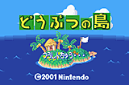
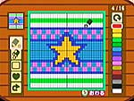

|
| |
| では、いよいよゲームキューブの『どうぶつの森＋』についてお聞きしようと思います。村の広さはゲームキューブになって変わったんですか。 |
| |
| 江口 キューブ版でも同じ広さですね。これからも広げないと思うんです。それよりは、この中をもっと深く掘りさげて密度を濃くしていきたいんですね。 |
| |
| 今回はゲームボーイアドバンスとも連動して、いろいろな遊びができますよね。 |
| |
| 江口 キューブ版を作るという話がきたときに、モバイルアダプタＧＢを使って、村のお出かけをモバイルでできないかと考えたんです。だけど、データ量の関係などで難しかったんですね。でも、アドバンスとキューブは連動させたかったので、そこで出てきたのが、“島”と“仕立て屋さん”のアイデアなんです。。 |
| |
アドバンスとつなぐと村に“島”が現れるというものですよね。
江口 ええ、島にわたって、隠れ家的な家を住民と一緒に使えるんです。
野上 村の生活をアドバンスで見ることもできるんですよ。 |
| |
| あとは、仕立て屋さんで自分のデザインを作れるんですよね。これはアドバンス上でも制作できるそうですが。 |
| |
| 江口 そうですね。作ったデザインはカサや洋服の生地として使えるんですが、それだけでなく、アイデア次第でスゴい使いかたができるんです。みなさんで考えて使ってみてください。また、仕立て屋さんに自分のデザインをあずけておくと、村の動物たちが着ていることがあるんですよ。いつのまにか村の中で自分のデザインが流行るんですね。村中を自分の作った服だらけにするのも夢ではありません。 |
| |
| 最後に、クリスマス特集ですので、クリスマスにオススメの遊びかたを教えてください。 |
| |
野上 やはりクリスマスのイベントをぜひ体験してほしいですね。
江口 ええ、彼に会ってクリスマスのプレゼントをもらわないと、もうあと１年間は会えませんから。クリスマスになる前にソフトを買って、イブまでに村でのアルバイトを終わらせておいてほしいんです。イブの日はパーティーを楽しんだあとで、こっそり１人で村に行ってみてください。 |
| |
| それは楽しみですね。今日は本当にありがとうございました。 |